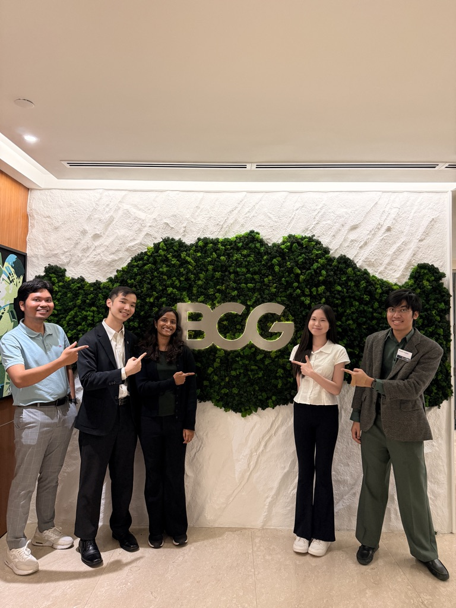
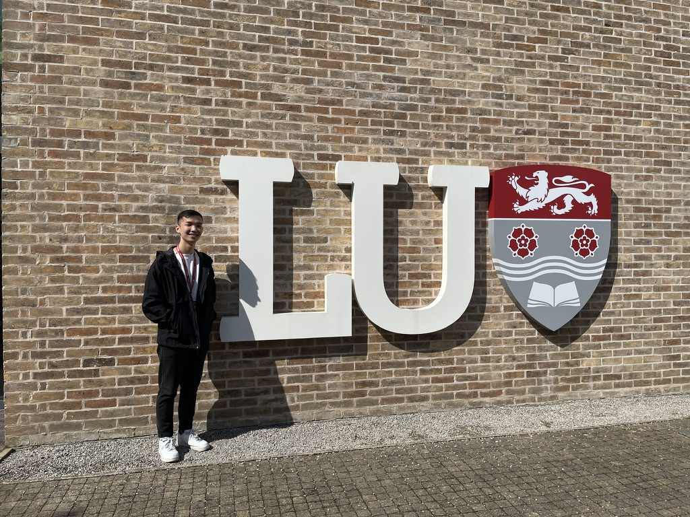

Personal Gallery
A glimpse into my personal events and achievements.

BCG Emeralds Programme 2026
A selective consulting fellowship with the Boston Consulting Group in their KL office

SunFest 2025
An initiative that raised RM 12,000 for community projects and women's welfare

Lancaster Summer School 2024
A three-week summer programme covered fully by the Chancellor's Scholarship